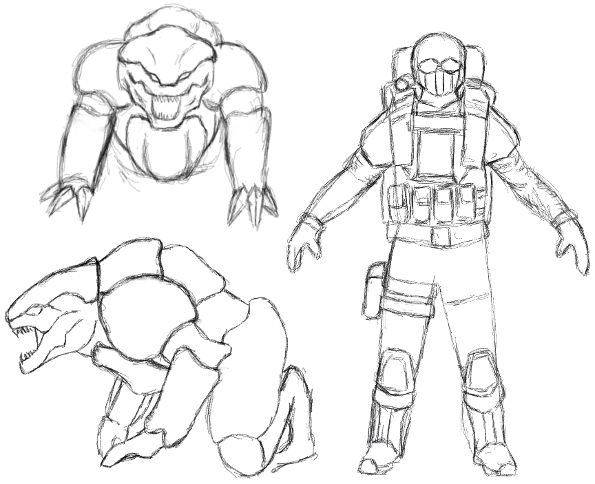
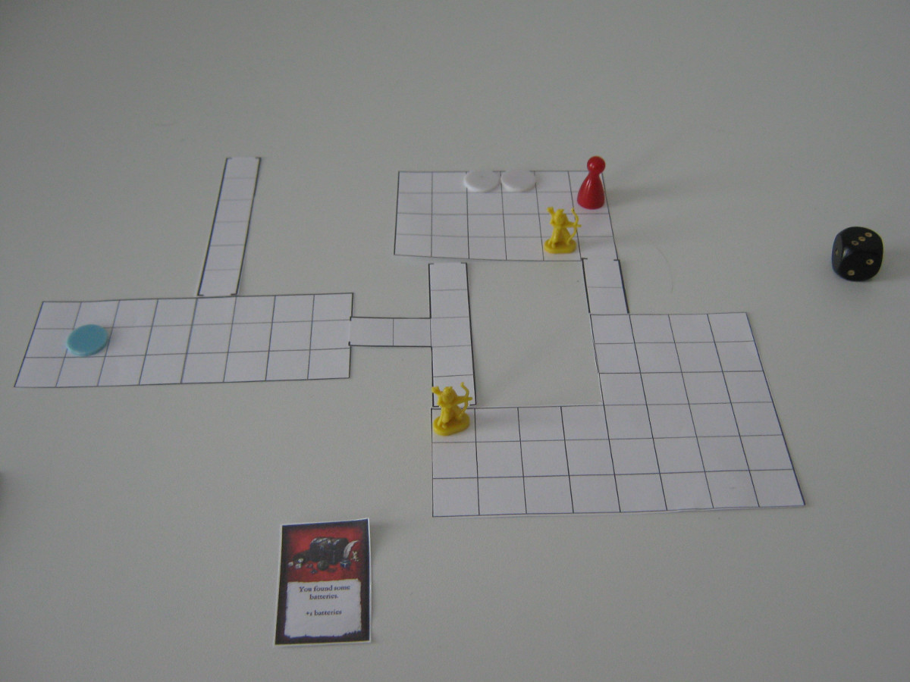
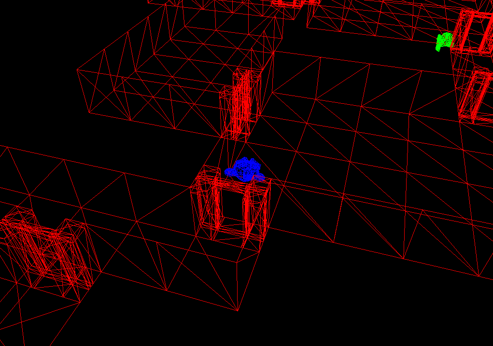
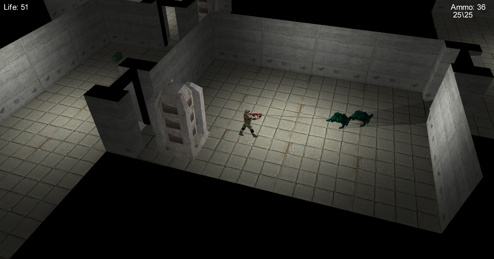
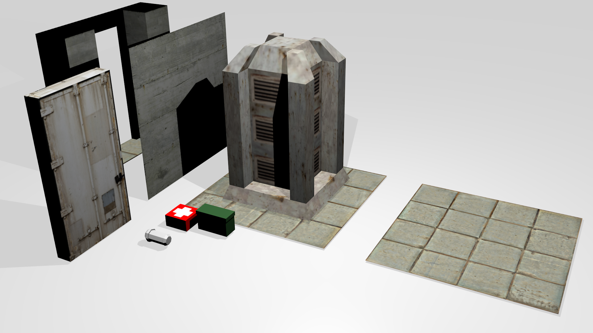

Overview
This was the first project I worked on that we developed from scratch without using a game engine. The game had to be finished in one semester including the concept phase, the development as well as user testing. More details about how my experiences during development can be found in this blog post.
The game was developed in C++ with DirectX11 for the rendering. We used Blender and GIMP to create the assets for the game. It was for this practical course.
Some of the stuff I worked on during the project were the following:
- Concept
- Paper prototype
- Basic engine framework
- Level architecture
- Procedural level generation
- Character interaction
- Level loading
- Asset creation
Details
Concept
The initial concept for our game was for the player to search abandoned underground facilities on a planet where all life is underground. The player should have to fight against aliens and gather as much resources as possible without dying. Because of the underground setting light should play an important role, both as a means for attack as well as defense. Because we did not have artists in our team I did most of the concept art. Some of it can be seen below:
Our idea of the aliens was that they would live underground and be very sensitive to light. This should be used as an advantage to the player by scaring them off or changing the layout of the level through lighting areas. The amount of aliens would also increase when venturing deeper into the levels and the would become more aggressive.
Paper prototype
We had the task to create a paper prototype for our game. Because the game would be played in real time we had to somehow represent the actions like shooting and walking around in our paper prototype. To achieve this, we changed the game to be turn based. The player and the aliens both had a certain amount of actions per round. To recreate the exploring of the base we created room modules that would be connected while the player was walking through the level.
The goal for the player was to collect as much money as possible and reach the starting point of the level again without being killed by the aliens.
Basic engine framework
As a reference for the basic engine structure I used the book Game Engine Architecture. It covers most subsystems needed to create a game. The first things I developed were a simple renderer with DirectX that would render 3D meshes. As a file format we used .obj.
After this I implemented the user interactions through keyboard and mouse as well as the iso camera.
Level architecture
After the rendering was working in principle I started with how to store our levels for the game. Because the camera is attached to the player all the time and the iso perspective cannot be changed during the game we only have to see a small part of the actual level. As a structure for the level I used a quad tree and only loaded the chunks nearest to the player into memory. During gameplay a buffer of three by three chunks was allocated. When the player was moving around, new chunks would be loaded into this rectangle based on the movement direction and overwrite the no longer needed chunks. On the resulting chunks I performed frustum culling to determine which should be rendered.
Because the player cannot jump or climb in our game he only moves in two dimensions. To perform collision detection, we used a height map for each chunk indicating whether the player could walk on this position or not.
Each chunk also had the information for the mesh instances that should be rendered. We used instanced rendering for most of the level geometry.
Procedural level generation
We decided from the beginning against creating levels by hand for two reasons: First we would have needed to create a level editor. Second we wanted to work on programming rather than designing levels.
For the creation of the levels I decided to do it using rectangular rooms that would be connected by corridors and could vary in size. I used agent based dungeon growing. The idea behind this is to start the agent at one point and then go in random directions and try to add rooms. The rooms were connected by narrow corridors. Through this the level would grow from the inside and would be denser in the middle. After the creation was finished the rooms had to be split up into the level chunks to be loaded correctly on runtime.
Character interaction
For our game we needed the ability for the player to pick up objects that are placed in the level. Also it should be possible to interact with various other objects like generators or doors in the level.
To realize this, I expanded on the collision height field and stored information for possible interactions at the current position in addition to the collision information. When pressing E, the player code would check the value at the current position and perform the required action.
For the other interactions with the level rooms had to have power for the doors to work. To do this, generators could be powered on by using a battery. After this it was possible to open and close doors and the light would be powered on.
The generators and items were placed randomly in the levels. I had to expand my procedural level generation code to do this. Additional care had to be taken to define which rooms where powered by which generators. Also I had to implement a graph structure for the whole level with the rooms as nodes and the edges as the corridors which was used for the artificial intelligence of the aliens.
Level loading
The starting point for the player is a central elevator that connects all levels of the current map. From here he can return to his base of operation or go to deeper levels.
If the player selects a different level from the elevator the chunks have to be loaded. To perform this, I simply marked all current chunks as old and added the new chunks to the list of chunks that needed to be loaded.
After I added the items to the level and the interactions with doors and generators I had to save the modifications to the levels both during gameplay and after restarting the game. To do this I saved all the modifications per chunk and if the corresponding chunk was removed from the chunk buffer I saved these in a separate file. When reloading this chunk, I would check if such a file exists and overwrite the state of the loaded chunk with the modified information.
Asset creation
Because we had no artist during this project I did most of the placeholder assets for the game which can be seen here:
Links
More information on the project can be found here.